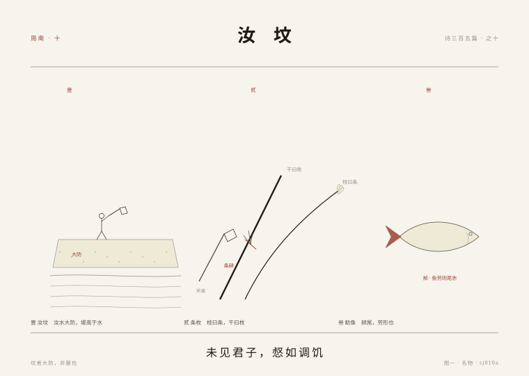
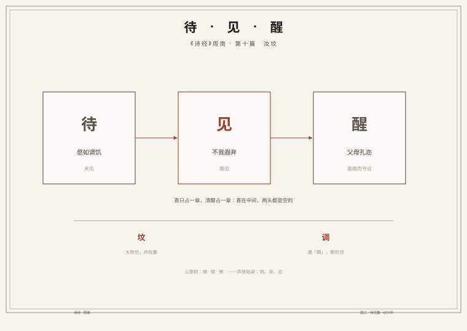

第十篇 汝坟
周南 · 之十 SJ010
朗读 · 普通话
依经文正文朗读，句读从文；不配乐、不改速、不加拖腔。全库同一音色（豆包 TTS），非播音员录制。
一 解题
诗三判：
- 谁在说：汝水堤边一个妇人。她伐薪、她等、她终于见到、又看见他待不住。
- 说什么事：三章是三个时刻——没见到时的饥渴，见到时的「你不弃我」，再到「王事如火，父母在近」的一刻清醒。
- 为何编在此：第九篇《汉广》立的是「不可及」的界，此篇写的是「可及而不可久」。周南行役之诗，前有《卷耳》之去，此有《汝坟》之归；一去一归，把「人在路上」的两头都写完了。
《毛序》：「《汝坟》，道化行也。文王之化行乎汝坟之国，妇人能闵其君子，犹勉之以正也。」——把末章的「父母孔迩」读成「劝夫以正」。
朱子《诗集传》：「汝坟之人，被文王之化……妇人喜其君子行役而归，因记其未归之时，思望之情如此，而追赋之也。」——朱子以为是「既见」之后追想从前。
本库的看法：这是一首「归而不可久」的诗，不是「化行」的道德样本。
三章最动人的不是相见的喜，是喜之后那一刻的清醒：王事如火，他不能留；父母在近，她不能走。三句之内，一个家被两头的力扯住。
二 经文
第一章
遵彼汝坟，伐其条枚。未见君子，惄如调饥。
第二章
遵彼汝坟，伐其条肄。既见君子，不我遐弃。
第三章
鲂鱼赪尾，王室如燬。虽则如燬，父母孔迩。
分章：毛传、朱子皆三章，章四句。前二章句式全同（遵彼汝坟／伐其条枚、条肄），第三章忽然换骨——不再「遵彼」，不再「伐」，只三样东西：鱼尾、王事、父母。形式一转，诗就从「等」落到了「此刻」。
三 韵读
| 一 |
枚、饥 |
微部 |
| 二 |
肄、弃 |
質部 |
| 三 |
尾、燬、迩 |
微部 |
首尾两章同归微部，中间一章用質部——短促、断裂，正合「既见」那一刻的陡然。全篇韵脚都是贴身之物：饥、弃、迩。声不与宏大者为伍，事情也就在灶下、堤边、门前。
四 字义名物
- 遵——沿着、循着。
- 汝坟——汝水的堤岸。坟，大防（《毛传》「坟，大防也」），不是坟墓。
- 条枚——枝曰条，干曰枚（《毛传》）。伐其条枚，是连枝带干地砍。
- 惄（nì）——饥而忧，心里空落落地难受。
- 调饥——朝饥，早晨的饿。「调」通「朝」（《毛传》「调，朝也」）。以早晨的空腹喻思念之切——不是「调和饥饿」。
- 条肄——斩而复生的枝条（《毛传》「肄，余也，斩而复生者」）。第一章砍过的，第二章又长出来：时间在这一字里过去了。
- 遐弃——远远地弃。不我遐弃，是不把我丢在远处。
- 鲂（fáng）——鳊鱼。
- 赪（chēng）——赤色。鱼劳则尾赤（《毛传》）。以鱼之劳形，写人之劳形。
- 燬（huǐ）——火。王室如燬，王事如火烧，急而且烈。
- 孔——甚、很。迩——近。
五 今译
第一章
沿着汝水的堤岸，砍那枝条和树干。没见到你的时候，像早晨空着肚子那样难受。
第二章
沿着汝水的堤岸，砍那砍过又长出来的枝条。见到你了——你没有把我丢在远处。
第三章
鲂鱼的尾巴都累红了，王事像火一样急。就算像火一样急——父母就在近旁。
译注：末句不译作「所以你要以正道自勉」。「父母孔迩」是一句自顾的话：他的王事如火，我的父母在近处；他不能留，我不能走。两句话不必连成一个道理，连成道理就把它读薄了。
六 章旨
一章：待。伐薪是手上的事，等是心里的事。「惄如调饥」四字，把等待写成一种生理的空。
二章：见。一个「肄」字交代了时间：上次砍过的地方又抽了新枝。见到之后第一句话不是欢喜，是「不我遐弃」——她心里先怕的是被丢下。
三章：醒。鱼尾红、王事火、父母近。喜只占一章，清醒占一章。这一章是全篇的骨头：它不是怨，是明白。
三章之序：待 → 见 →
醒。喜在中间，两头都是空的。这是《诗》写「重逢」最不甜的一篇。
七 诗教
- 赋：全篇直陈其事，前二章以「遵彼汝坟」起，是赋中之复沓，不是兴。
- 观：可观一「归」。归不全是喜；若归期短、王事急，归就是一次更清楚的分离。
- 群：它写的是最小的一群——一夫一妇，加上近处的父母。天下的大事（王室）压在三个人身上。
- 怨：有忧而无怨。「虽则如燬」四字，承认了，也就不怨了。
八 分寸与边界
- 不可把「汝坟」解作「汝水边的坟墓」。坟是大防、堤岸；解作坟墓，全篇立成一幅哭丧图。
- 不可把「调饥」解作「调养饥饿」。调通朝，是「朝饥」——早晨的空腹，喻思之切。
- 不可把「父母孔迩」读成「劝夫以正」。这是《毛序》的政治读法；诗里只有父母在近处这一件事，没有一句道德劝勉。
- 不可把第三章读成「怨王室」。它说「虽则如燬，父母孔迩」——承认王事之急，然后退守最近的人。这是守，不是抗。
- 不可把此篇读成「文王之化」的证词。诗中没有一个「化」字，只有一条堤、一把斧、一条累红的鱼尾。
九 存疑
- 「既见」是否真见：朱子以为是既见之后追赋；一说三章是同一日的三段（未见到见到是同一天之内的事）。本库取后者：一章之内由待转见，更见归期之短。
- 「王室如燬」所指：一说纣王之世，一说泛指王事急迫。本库不坐实史事，只取「急」。
- 「父母孔迩」是谁的父母：一说妇之父母，一说夫之父母。本库取妇之父母——故她不能随行。
- 「不我遐弃」的语气：一说「你未曾远弃我」（慰），一说「你可别远弃我」（惧）。本库取前者，但承认惧意未尽。
- 是否妇人自作：旧说妇人作；今人有以为男女对唱。本库从前说，取一人口吻。
十 跨典
- 《周南·卷耳》「陟彼崔嵬，我马虺隤」——行役之去；此篇「既见君子」，行役之归。同卷两篇，把「路上」的两头写全。
- 《周南·汉广》「不可求思」——彼是够不着；此是够得着却留不住。周南写「不可」，先写空间的界，再写时间的短。
- 《邶风·击鼓》「死生契阔，与子成说」——同是行役之情，彼誓于前，此醒于后。
- 《小雅·采薇》「昔我往矣，杨柳依依；今我来思，雨雪霏霏」——归途之诗，写景而情在景中；此篇不写景，只写鱼尾与父母，一样重。
- 《毛诗·汝坟》与《列女传》——后世以「父母孔迩」附会贤妇劝夫，属解释史。
- 《说文》「坟，墓也」——须辨：《诗》之「坟」为大防，与后世「坟墓」义不同源。
十一 双卡与图
双卡五对：
| 汝坟（大防） |
坟墓（后世义） |
| 条（枝） |
枚（干） |
| 条枚（初伐） |
条肄（再生） |
| 惄如调饥（未见） |
不我遐弃（既见） |
| 鲂鱼赪尾（劳形） |
父母孔迩（守近） |

图一 · 汝坟·条枚·赪尾 名物图

图二 · 待·见·醒 义理图
读图三处：
- 堤高于水：汝坟是防水之堤，土色一线横过水面。人立在堤上伐薪，脚下一道防线——「遵彼汝坟」四字，先有这条线，才有这首诗。
- 条与枚分开画：枝细而曲，干粗而直，斧落处两者同断。毛传「枝曰条，干曰枚」不是训诂的细，是手上的两种东西。
- 尾赤：鲂鱼尾赤不是为了好看，是「鱼劳则尾赤」。全篇最狠的一笔，是用一条鱼的尾巴，写一个人的疲。